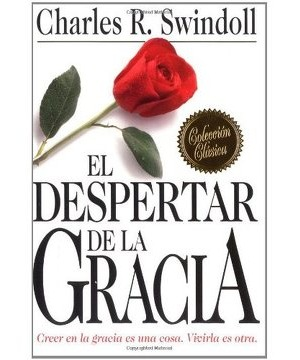

RESEÑA
Charles R. Swindoll es un comunicador dotado, tanto a través de los medios escritos como de los medios de comunicación (radio cristiana mundial). Como autor o coautor ahora de más de setenta libros exitosos, ha tenido un tremendo impacto en la difusión del mensaje del Evangelio cristiano por todo el mundo.
En 2017, mi esposa y yo tuvimos la bendición de recibir este libro como regalo por un muy amadísimo hermano de nuestra iglesia, La Vid, en Monterrey, México.
El Despertar de la Gracia, el libro más vendido de Swindoll, es respetuosamente capaz de responder y desmantelar sistemáticamente los movimientos de legalismo dentro de la comunidad cristiana, instándote a no perderte una vida llena de gracia. Liberación y gozo esperan a todos los que creen en nuestro Señor Jesucristo.
Recomendable para ese número creciente de personas que sienten que debe haber algo más en su diario caminar y relación con Dios, que el rostro a veces sombrío de la “religión”.
La gracia perfeccionará su relación con el Señor, mejorando sus actitudes y permitiendo ser vivificado con profundo y permanente gozo. Y es un hermoso e invaluable regalo que el Señor le quiere conceder a su corazón hoy.
El Despertar de la Gracia ofrece una alternativa gloriosa: la Verdad que nos libera.
El Despertar de la Gracia: Creer en la gracia es una cosa. Vivirla es otra.
Libro recomendado por Carlos Bortoni, Líder de un Hogar mixto los jueves por la noche.